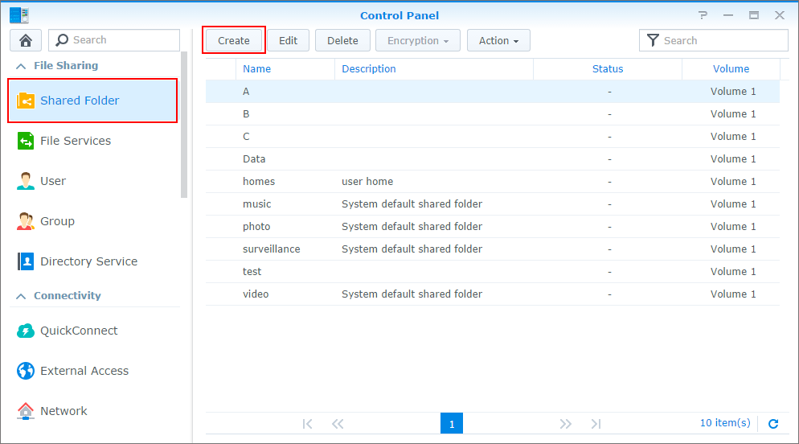
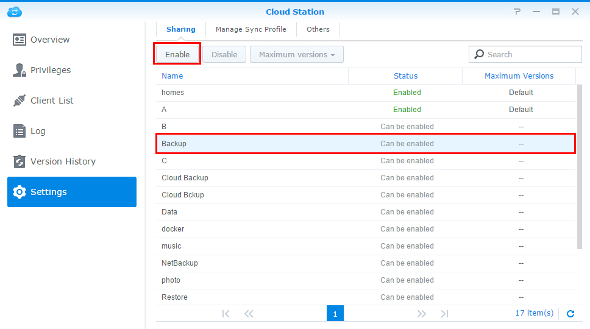
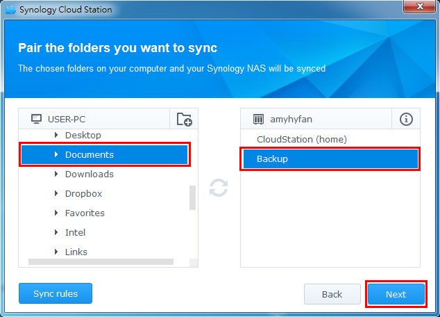
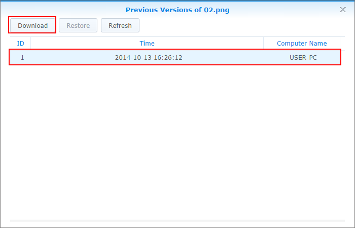

概述
Cloud Station 不僅是功能完整的跨平台同步軟體，亦可提供使用者更智慧的方式來備份個人電腦。 使用 Cloud Station 作為您的備份伙伴有數個優點。 首先，即時同步可提供較佳的復原點目標 (RPO)，亦即當您不慎遺失電腦上的資料時，便能縮短資料遺失 (無法復原) 的時間以降低損害。 Cloud Station 不僅能即時同步，相較於須消耗大量頻寬的傳統備份方式，Cloud Station 更可替您大幅節省頻寬。 只要在您的 PC 用戶端設定檔案大小或檔案類型，便能夠在相同資料夾中輕鬆過濾掉不想備份的檔案。 針對同一檔案，Cloud Station 能保留多達 32 個版本，任一版本皆可從伺服器 (NAS) 端還原至 PC 用戶端。
1. 在 eCore Server 上設定 Cloud Station
- 使用屬於 administrators 群組的帳號登入 DSM。
- 開啟 Cloud Station。
- 若您還未啟動使用者家目錄，系統會要求您先啟動該功能。 按一下確定。
- 您將會被重新導向至使用者設定頁面。 啟動使用者家目錄，然後按一下套用。
- 回到 Cloud Station，系統將會要求您先啟動此套件。 按一下是。
- 前往權限來指定哪些使用者可以使用 Cloud Station。 按一下儲存。
- 在您的 eCore Server 建立備份時使用的資料夾 。 若要設定，前往控制台 > 共用資料夾並按一下新增。 
- 為您的資料夾命名並在欄位中填入您的資料。 按一下確定。 例如，資料夾命名為 Backup。
- 在權限頁籤中，指定對此資料夾有存取權限的使用者。 例如，指派資料夾的 read/write 權限給 admin。 按一下確定。
- 前往 Cloud Station > 設訂 > 分享，選擇備份資料夾並點一下啟動。 


注意：QuickConnect 是一種轉送服務，讓您在區域網路外仍可輕而易舉地連線至您的 eCore Server。 若您想隨時隨地同步您的檔案，建議您前往控制台 > QuickConnect 來設定此功能。


2. 在 Mac 或 PC 上設定 Cloud Station
請依照下列步驟在 Mac 或 Windows 電腦上設定 Cloud Station
2.1 在 PC 上
- 前往 Cloud Station > 總覽，然後按一下下載按鈕。
- 按一下按鈕來下載適用 Windows PC 系統的 Cloud Station。 (亦可前往 Synology 下載中心進行下載。)
- 在電腦上開啟安裝程式，並依照指示安裝 Cloud Station。
- 安裝完成後，在電腦上執行 Cloud Station。 按一下立即開始。
- 輸入您的電腦名稱、執行 Cloud Station 的 eCore Server 位址 (或 QuickConnect ID)、使用者名稱及密碼。 （您可以點一下右邊的搜尋圖示讓 Cloud Station 自動尋找 LAN 裡其他的 eCore Server。） 按一下下一步。
- 選擇您想要如何建立您的任務。（例如進階設定 來建立為了備份的資料夾。) 按一下下一步。
- 選擇一個電腦上的資料夾來與 eCore Server 上的 Backup 資料夾保持同步。 按一下下一步。 
- 按一下完成來完成設定。


注意：請確認您已賦予權限給該使用者帳號 (可前往 eCore Server 上的 Cloud Station > 權限進行設定)。


若要建立新任務：
- 前往 Cloud Station > 設定並為此新任務啟動資料夾。 例如，photo。確認您對 photo 有 read/write 權限。
- 在您 PC 上的 Cloud Station 按一下建立。
- 為您的新任務選擇 eCore Server。 例如已連線的 eCore Server 來為同一台 eCore Server 建立任務。 按一下下一步。
- 按一下進階設定並跟隨螢幕上的精靈指示來完成設定。


2.2 在 Mac 上
- 前往 Cloud Station > 總覽，然後按一下下載按鈕。
- 按一下按鈕來下載適用於 Mac 的 Cloud Station。 (亦可前往 Synology 下載中心進行下載。)
- 在電腦上開啟安裝程式，並依照指示安裝 Cloud Station。
- 安裝完成後，在電腦上執行 Cloud Station。 按一下立即開始。
- 輸入您的電腦名稱、執行 Cloud Station 的 eCore Server 位址 (或 QuickConnect ID)、使用者名稱及密碼。 （您可以點一下右邊的搜尋圖示讓 Cloud Station 自動尋找 LAN 裡其他的 eCore Server。） 按一下下一步。
- 選擇您想要如何建立您的任務。（例如進階設定 來建立為了備份的資料夾。) 按一下下一步。
- 選擇一個電腦上的資料夾來與 eCore Server 上的 Backup 資料夾保持同步。 按一下下一步。
- 按一下完成來完成設定。


注意：請確認您已賦予權限給該使用者帳號 (可前往 eCore Server 上的 Cloud Station > 權限進行設定)。


若要新增任務：
- 前往 Cloud Station > 設定並為此新任務啟動資料夾。 例如，photo。確認您對 photo 有 read/write 權限。
- 在您 PC 上的 Cloud Station 按一下建立。
- 為您的新任務選擇 eCore Server。 例如已連線的 eCore Server 來為同一台 eCore Server 建立任務。 按一下下一步。
- 按一下進階設定並跟隨螢幕上的精靈指示來完成設定。


3. 從 Cloud Station 取回您的資料
如果您不小心刪除或覆寫您的檔案，Cloud Station 能幫您輕鬆的取回您的資料 。
4.1 若要在 PC 下載同步檔案的先前版本：
- 按一下電腦選單列中的 Cloud Station 圖示，然後點一下資料夾圖示。
- 以滑鼠右鍵點按檔案，然後選擇 Synology Cloud Station > 瀏覽先前的版本。
- 選擇您欲下載的版本，然後按一下下載圖示。
- 輸入檔案名稱並選擇儲存目的地。


若要在 Mac 下載同步檔案的先前版本：
- 按一下電腦選單列中的 Cloud Station 圖示，然後點一下資料夾圖示。
- 以滑鼠右鍵點按檔案，然後選擇 Synology Cloud Station > 瀏覽先前的版本。
- 選擇您欲下載的版本，然後按一下下載圖示。
- 輸入檔案名稱並選擇儲存目的地。


４.3 若要從 Cloud Station 下載或還原檔案的先前班本
- 前往 Cloud Station > 版本歷史並選擇之前建立的 Backup 資料夾。
- 選擇您想要取回的檔案並點一下動作 > 瀏覽先前的版本。
- 選擇您想要下載的檔案版本並點一下下載。 如果您確定想要還原您選擇的版本，點一下還原來覆寫現有的版本。 


4. 重要事項
- 永遠保存歷史阪本以免不小心刪除或覆寫了檔案。
- 當您刪除 PC 端的檔案時，您可以設定讓系統重新從 NAS 同步檔案到 PC 或一起刪除 NAS 上的檔案。此功能可以在設定裡調整。
5. 進一步確保您的資料的安全性
如果您需要更多保護和備份您的資料方式，點一下此處前往更多有關 DSM 備份功能的應用教學。